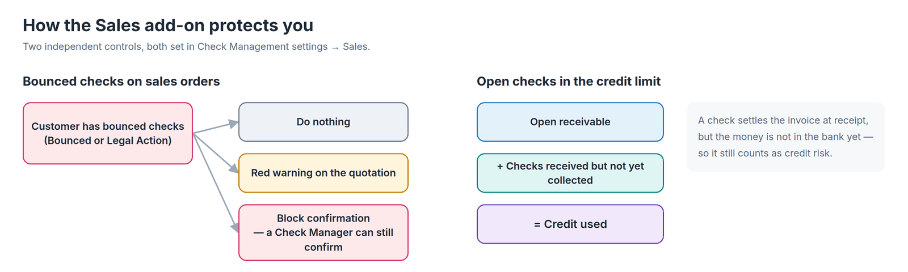
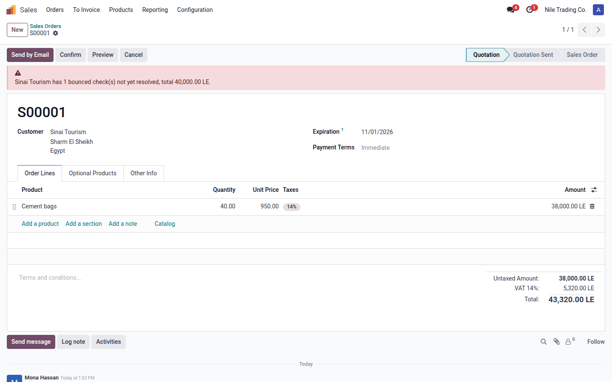
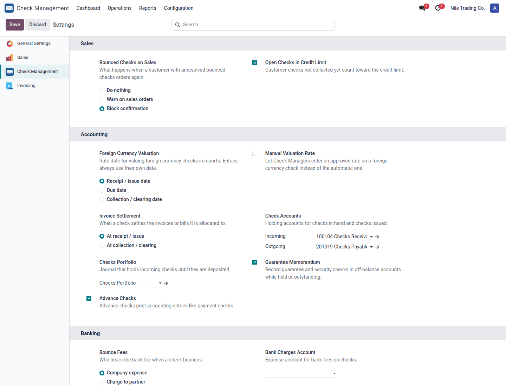

Stop selling on credit to customers whose checks bounced, and count checks that are not collected yet in the customer's credit limit.
Installs automatically with Sales Warn or block Credit limit aware

User guide (PDF) دليل المستخدم - عربي فصحى (PDF) دليل المستخدم - عربي مصري (PDF)
When the customer (or any contact of the same company) has incoming checks that are Bounced or under Legal Action, the quotation shows a red banner with the number of checks and the total. With the Block confirmation policy, only a Check Manager can confirm the order.
A post-dated check settles the invoice when you receive it, so the receivable drops before the money reaches the bank. This add-on adds those uncollected checks (received, under collection or discounted) back into Odoo's credit-limit warning, and says so in the message.

A quotation for a customer with an unresolved bounced check

sa_check_management and sale; auto_install. Version 18.0.1.2.0, license OPL-1.sale.order.action_confirm and account.move._build_credit_warning_message.Author: Sayed Anwar